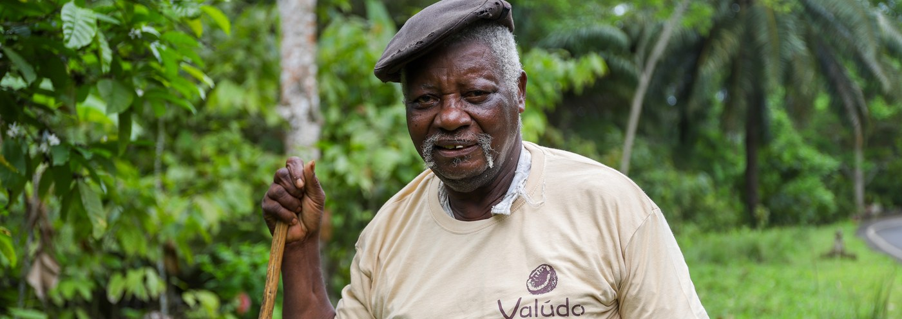

A range built from controlled value chains, in Africa and Asia, for food and cosmetic markets. We select each product for its quality, the reliability of its value chain and its ability to meet our clients' uses and requirements.
From oil to food ingredients, we develop a coconut range from selected, traceable value chains, for food and cosmetics alike.

We select our shea within identified African value chains, with particular attention to material quality, traceability and intended uses.
Nilotica shea is a variety naturally found in East Africa. We source it in Uganda, for cosmetic applications seeking notably its texture and specific properties.
Working with several origins lets us adapt each value chain to the requirements of the product, the market and supply security.
Identify, for each material, the origins and know-how best suited to the sought characteristics.
Offer clients different options of origin, format and positioning depending on their needs.
Diversify origins to reduce dependence on a single value chain and better secure volumes over time.
Keep the right level of competitiveness without compromising on quality, with more medium-term visibility on prices.
We also develop custom sourcing solutions when our clients look for a specific material, origin or level of processing.
Depending on the project, our approach may include:
We don't list a material just because it's available somewhere. We first seek to understand its value chain and to verify that it meets the standards our clients expect.

Depending on products, origins and volumes, we offer different packaging formats to meet our clients' constraints.
Suited to intermediate volumes and industrial uses requiring more flexibility.
A solution suited to regular bulk supply and industrial needs.
For large volumes and bulk supply at industrial scale.
Other formats and packaging solutions can be studied depending on products and projects.
Want to go all the way to a finished product? We can also support selected projects through to packaging, private or white label.
Our value chains rely on quality and traceability documentation adapted to products and markets. Technical data sheets, certificates of analysis, compliance documents and traceability elements are available depending on the references. Our controls also rely on partner laboratories in Europe.


 Valúdo's own commitment
Valúdo's own commitment
Certifications depending on products, value chains and origins. Up-to-date certificates available on request.
Tell us about your need, your specifications and your constraints. We'll suggest the most suitable material, origin and format.
Request a sample